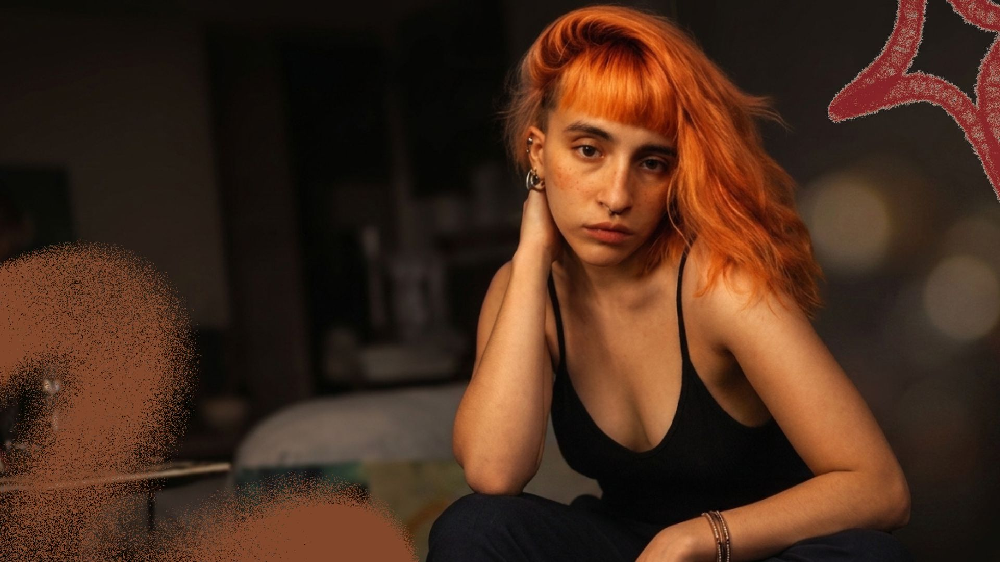

PURO MOVIMIENTO
Trabajo realizado para Espacio Tipográfico 03. Realización de diseño editorial; folleto.
Ver más
TRABAJEMOS JUNTOS *
¡Hola! Soy Rocío, diseñadora, y tatuadora de San José (Temperley). Me apasiona la comunicación visual en todas sus formas y busco constantemente aprender y crear nuevos proyectos. Te cuento un poco sobre mi recorrido y lo que me gusta hacer:
Un recorrido por los programas y aplicaciones que forman parte de mi kit diario para darle forma a cada proyecto. Desde herramientas profesionales de diseño y desarrollo web hasta aplicaciones móviles para crear contenido ágil y dinámico en redes sociales.


Trabajo realizado para Espacio Tipográfico 03. Realización de diseño editorial; folleto.
Ver másTrabajo realizado para Taller De Diseño 03. Realización de branding; brandbook.
Ver másTrabajo realizado para Espacio Tipográfico 02. Realización de diseño editorial; libro.
Ver más